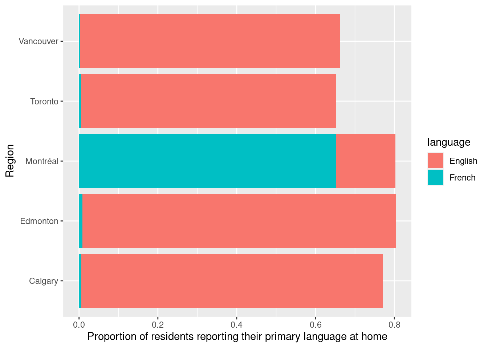

Chapter 3 Cleaning and wrangling data
3.1 Overview
This chapter will be centered around tools for cleaning and wrangling data that move data from its raw format into a format that is suitable for data analysis. They will be presented in the context of a real world data science application, providing more practice working through a whole case study.
3.2 Chapter learning objectives
By the end of the chapter, students will be able to:
- define the term “tidy data”
- discuss the advantages and disadvantages from storing data in a tidy data format
- recall and use the following tidyverse functions and operators for their intended data wrangling tasks:
selectfiltermutate%>%%in%pivot_longerpivot_widerseparatesummarizegroup_bymap
3.3 Vectors and Data frames
At this point, we know how to load data into R from various file formats. Once loaded into R, most of the tools we have learned about for reading data into R represent the data as a data frame. So now we will spend some time learning more about data frames in R so that we have a better understanding of how we can use and manipulate these objects.
3.3.1 What is a data frame?
Let’s first start by defining what a data frame is exactly. From a data perspective, it is a rectangle where the rows are the observations:

Figure 3.1: Rows are observations in a data frame
and the columns are the variables:

Figure 3.2: Columns are variables in a data frame
From a computer programming perspective, in R, a data frame is a special subtype of a list object whose elements (columns) are vectors.
For example, the data frame below has 3 elements that are vectors whose names are state, year and population.

Figure 3.3: Data frame with 3 vectors
3.3.2 What is a vector?
In R, vectors are objects that can contain 1 or more elements. The vector elements are ordered, and they must all be of the same type. Common
example types of vectors are character (e.g., letter or words), numeric (whole numbers and fractions) and logical (e.g., TRUE or FALSE). In
the vector shown below, the elements are of numeric type:

Figure 3.4: Example of a numeric type vector
3.3.3 How are vectors different from a list?
Lists are also objects in R that have multiple elements. Vectors and lists differ by the requirement of element type consistency. All elements within a single vector must be of the same type (e.g., all elements are numbers), whereas elements within a single list can be of different types (e.g., characters, numbers, logicals and even other lists can be elements in the same list).

Figure 3.5: A vector versus a list
3.3.4 What does this have to do with data frames?
As mentioned earlier, a data frame is really a special type of list where the elements can only be vectors. Representing data with such an object enables us to easily work with our data in a rectangular/spreadsheet-like manner, and to have columns/vectors of different characteristics associated/linked in one object. This is similar to a table in a spreadsheet or a database.

Figure 3.6: Data frame and vector types
The functions from the tidyverse package that we are using often give us a
special class of data frame, called a tibble. Tibbles have some additional
features and benefits over the built-in data frame object. These include
ability to add grouping (and other useful) attributes, as well as more
predictable type preservation when subsetting. Because tibble is just a data
frame with some added features, we will collectively refer to both built-in R
data frames and tibbles as data frames in this book.
You can use the function
classon a data object to assess whether a data frame is a built in R data frame or a tibble. If the data object is a date frameclasswill return"data.frame", whereas if the data object is a tibble it will return"tbl_df" "tbl" "data.frame". You can easily convert built in R data frames to tibbles using thetidyverseas_tibblefunction.
3.4 Tidy Data
There are many ways a spreadsheet-like data set can be organized. This chapter will focus on the tidy data format of organization, and how to make your raw (and likely messy) data tidy. We want to tidy our data because a variety of tools we would like to use in R are designed to work most effectively (and efficiently) with tidy data.
3.4.1 What is tidy data?
Tidy data satisfy the following three criteria (Wickham and others 2014):
- each row is a single observation,
- each column is a single variable, and
- each value is a single cell (i.e., its row and column position in the data frame is not shared with another value)
Figure 3.7: Tidy data
Definitions to know:
observation - all of the quantities or a qualities we collect from a given entity/object
variable - any characteristic, number, or quantity that can be measured or collected
value - a single collected quantity or a quality from a given entity/object
3.4.2 Why is tidy data important in R?
First, one of R’s most popular plotting tool sets, the ggplot2 package (which is one of the packages that the tidyverse package loads), expects the data to be in a tidy format. Second, most statistical analysis functions also expect data in a tidy format. Given that both of these tasks are central in almost all data analysis projects, it is well worth spending the time to get your data into a tidy format upfront. Luckily there are many well-designed tidyverse data cleaning/wrangling tools to help you easily tidy your data. Let’s explore them now!
3.4.3 Going from wide to long (or tidy!) using pivot_longer
One common thing that often has to be done to get data into a tidy format is to combine columns that are really part of the same variable but currently stored in separate columns. Data is often stored in a wider, not tidy, format because this format is often more intuitive for human readability and understanding, and humans create data sets. We can use the function pivot_longer, which combines columns, thus making the data frame longer and narrower.
To learn how to use pivot_longer, we will work with a data set called region_lang, containing data retrieved from the 2016 Canadian census. For each census metropolitan area, this data set includes counts of how many Canadians cited each language as their mother tongue, the language spoken most often at home/work and which language they know.
We will use read_csv to import a subset of the region_lang data called region_lang_top5_cities_wide.csv, which contains only the counts of how many Canadians cited each language as their mother tongue for five major Canadian cities (Toronto, Montreal, Vancouver, Calgary and Edmonton). Our data set is stored in an untidy format, as shown below:
## # A tibble: 214 x 7
## category language Toronto Montréal Vancouver Calgary Edmonton
## <chr> <chr> <dbl> <dbl> <dbl> <dbl> <dbl>
## 1 Aboriginal langua… Aboriginal la… 80 30 70 20 25
## 2 Non-Official & No… Afrikaans 985 90 1435 960 575
## 3 Non-Official & No… Afro-Asiatic … 360 240 45 45 65
## 4 Non-Official & No… Akan (Twi) 8485 1015 400 705 885
## 5 Non-Official & No… Albanian 13260 2450 1090 1365 770
## 6 Aboriginal langua… Algonquian la… 5 5 0 0 0
## 7 Aboriginal langua… Algonquin 5 30 5 5 0
## 8 Non-Official & No… American Sign… 470 50 265 100 180
## 9 Non-Official & No… Amharic 7460 665 1140 4075 2515
## 10 Non-Official & No… Arabic 85175 151955 14320 18965 17525
## # … with 204 more rowsWhat is wrong with our untidy format above? From a data analysis perspective, this format is not ideal because, in this format, the outcome of the variable region (Toronto, Montreal, Vancouver, Calgary and Edmonton) is stored as column names. Thus it is not easily accessible for the data analysis functions we will want to apply to our data set. Additionally, the values of the mother tongue variable are spread across multiple columns. This will prevent us from doing any desired visualization or statistical tasks until we somehow combine them into one column. For instance, suppose we want to know which languages had the highest number of Canadians reporting it as their mother tongue among all five regions? This question would be very difficult to answer with the data in its current format. It would be much easier to answer if we tidy our data first.
To accomplish this data transformation, we will use the tidyverse function pivot_longer. To use pivot_longer we need to specify the:
data: the data setcols: the names of the columns that we want to combinenames_to: the name of a new column that will be created, whose values will come from the names of the columns that we want to combinevalues_to: the name of a new column that will be created, whose values will come from the values of the columns we want to combine
For the above example, we use pivot_longer to combine the Toronto, Montreal, Vancouver, Calgary and Edmonton columns into a single column called region, and create a column called mother_tongue that contains the count of how many Canadians report each language as their mother tongue for each metropolitan area. We use a colon : between Toronto and Edmonton tells R to select all the columns in between Toronto and Edmonton:
lang_mother_tidy <- pivot_longer(lang_wide,
cols = Toronto:Edmonton,
names_to = "region",
values_to = "mother_tongue"
)
lang_mother_tidy## # A tibble: 1,070 x 4
## category language region mother_tongue
## <chr> <chr> <chr> <dbl>
## 1 Aboriginal languages Aboriginal languages,… Toronto 80
## 2 Aboriginal languages Aboriginal languages,… Montréal 30
## 3 Aboriginal languages Aboriginal languages,… Vancouv… 70
## 4 Aboriginal languages Aboriginal languages,… Calgary 20
## 5 Aboriginal languages Aboriginal languages,… Edmonton 25
## 6 Non-Official & Non-Aboriginal … Afrikaans Toronto 985
## 7 Non-Official & Non-Aboriginal … Afrikaans Montréal 90
## 8 Non-Official & Non-Aboriginal … Afrikaans Vancouv… 1435
## 9 Non-Official & Non-Aboriginal … Afrikaans Calgary 960
## 10 Non-Official & Non-Aboriginal … Afrikaans Edmonton 575
## # … with 1,060 more rowsSplitting code across lines: In the code above, the call to the
pivot_longerfunction is split across several lines. This is allowed and encouraged when programming in R when your code line gets too long to read clearly. When doing this, it is important to end the line with a comma,so that R knows the function should continue to the next line.*
The data above is now tidy because all 3 criteria for tidy data have now been met:
- All the variables (
category,language,regionandmother_tongue) are now their own columns in the data frame. - Each observation, i.e., each
category,language,region, and count of Canadians where that language is the mother tongue, are in a single row. - Each value is a single cell, i.e., its row, column position in the data frame is not shared with another value.
3.4.4 Going from long to wide using pivot_wider
Suppose we have observations spread across multiple rows rather than in a single row. To tidy this data, we can use the function pivot_wider, which generally increases the number of columns (widens) and decreases the number of rows in a data set.
The data set region_lang_top5_cities_long.csv contains the number of Canadians reporting the primary language at home and work for five major cities (Toronto, Montreal, Vancouver, Calgary and Edmonton).
## # A tibble: 2,140 x 5
## region category language type count
## <chr> <chr> <chr> <chr> <dbl>
## 1 Montréal Aboriginal languages Aboriginal languages, n.o.s. most_at_ho… 15
## 2 Montréal Aboriginal languages Aboriginal languages, n.o.s. most_at_wo… 0
## 3 Toronto Aboriginal languages Aboriginal languages, n.o.s. most_at_ho… 50
## 4 Toronto Aboriginal languages Aboriginal languages, n.o.s. most_at_wo… 0
## 5 Calgary Aboriginal languages Aboriginal languages, n.o.s. most_at_ho… 5
## 6 Calgary Aboriginal languages Aboriginal languages, n.o.s. most_at_wo… 0
## 7 Edmonton Aboriginal languages Aboriginal languages, n.o.s. most_at_ho… 10
## 8 Edmonton Aboriginal languages Aboriginal languages, n.o.s. most_at_wo… 0
## 9 Vancouver Aboriginal languages Aboriginal languages, n.o.s. most_at_ho… 15
## 10 Vancouver Aboriginal languages Aboriginal languages, n.o.s. most_at_wo… 0
## # … with 2,130 more rowsWhat is wrong with this format above? In this example, each observation should be a language in a region. However, in the messy data set above, each observation is split across multiple two rows - one where the count for most_at_home is recorded and one where the count for most_at_work is recorded. Suppose we wanted to visualize the relationship between the number of Canadians reporting their primary language at home and at work. It would be difficult to do that with the data in its current format. To fix this, we will use pivot_wider, and we need to specify the:
data: the data setnames_from: the name of a the column from which to take the variable namesvalues_from: the name of the column from which to take the values
## # A tibble: 1,070 x 5
## region category language most_at_home most_at_work
## <chr> <chr> <chr> <dbl> <dbl>
## 1 Montréal Aboriginal languages Aboriginal langua… 15 0
## 2 Toronto Aboriginal languages Aboriginal langua… 50 0
## 3 Calgary Aboriginal languages Aboriginal langua… 5 0
## 4 Edmonton Aboriginal languages Aboriginal langua… 10 0
## 5 Vancouv… Aboriginal languages Aboriginal langua… 15 0
## 6 Montréal Non-Official & Non-Abo… Afrikaans 10 0
## 7 Toronto Non-Official & Non-Abo… Afrikaans 265 0
## 8 Calgary Non-Official & Non-Abo… Afrikaans 505 15
## 9 Edmonton Non-Official & Non-Abo… Afrikaans 300 0
## 10 Vancouv… Non-Official & Non-Abo… Afrikaans 520 10
## # … with 1,060 more rowsThe data above is now tidy! We can go through the three criteria again to check that this data is a tidy data set.
- All the variables are their own columns in the data frame, i.e.,
most_at_home, andmost_at_workhave been separated into their own columns in the data frame. - Each observation, i.e., each
category,language,region,most_at_homeandmost_at_work, are in a single row. - Each value is a single cell, i.e., its row, column position in the data frame is not shared with another value.
You might notice that we have the same number of columns in our tidy data set as we did in our messy one. Therefore pivot_wider didn’t really “widen” our data as the name suggests. However, if we had more than two categories in the original type column, then we would see the data set “widen.”
3.4.5 Using separate to deal with multiple delimiters
Data are also not considered tidy when multiple values are stored in the same cell, as discussed above. In addition to the previous untidiness we addressed in the earlier versions of this data set, the one we show below is even messier:
the Toronto, Montreal, Vancouver, Calgary and Edmonton columns contain the number of Canadians reporting their primary language at home and work in one column separated by the delimiter “/”. The column names are the values of a variable, AND each value does not have its own cell! To make this messy data tidy, we’ll have to fix both of these issues.
## # A tibble: 214 x 7
## category language Toronto Montréal Vancouver Calgary Edmonton
## <chr> <chr> <chr> <chr> <chr> <chr> <chr>
## 1 Aboriginal langu… Aboriginal la… 50/0 15/0 15/0 5/0 10/0
## 2 Non-Official & N… Afrikaans 265/0 10/0 520/10 505/15 300/0
## 3 Non-Official & N… Afro-Asiatic … 185/10 65/0 10/0 15/0 20/0
## 4 Non-Official & N… Akan (Twi) 4045/20 440/0 125/10 330/0 445/0
## 5 Non-Official & N… Albanian 6380/215 1445/20 530/10 620/25 370/10
## 6 Aboriginal langu… Algonquian la… 5/0 0/0 0/0 0/0 0/0
## 7 Aboriginal langu… Algonquin 0/0 10/0 0/0 0/0 0/0
## 8 Non-Official & N… American Sign… 720/245 70/0 300/140 85/25 190/85
## 9 Non-Official & N… Amharic 3820/55 315/0 540/10 2730/50 1695/35
## 10 Non-Official & N… Arabic 45025/1… 72980/1… 8680/275 11010/… 10590/3…
## # … with 204 more rowsFirst we’ll use pivot_longer to create two columns, region and value, similar to what we did previously:
lang_messy_longer <- pivot_longer(lang_messy,
cols = Toronto:Edmonton,
names_to = "region",
values_to = "value"
)
lang_messy_longer## # A tibble: 1,070 x 4
## category language region value
## <chr> <chr> <chr> <chr>
## 1 Aboriginal languages Aboriginal languages, n.o… Toronto 50/0
## 2 Aboriginal languages Aboriginal languages, n.o… Montréal 15/0
## 3 Aboriginal languages Aboriginal languages, n.o… Vancouv… 15/0
## 4 Aboriginal languages Aboriginal languages, n.o… Calgary 5/0
## 5 Aboriginal languages Aboriginal languages, n.o… Edmonton 10/0
## 6 Non-Official & Non-Aboriginal lang… Afrikaans Toronto 265/0
## 7 Non-Official & Non-Aboriginal lang… Afrikaans Montréal 10/0
## 8 Non-Official & Non-Aboriginal lang… Afrikaans Vancouv… 520/…
## 9 Non-Official & Non-Aboriginal lang… Afrikaans Calgary 505/…
## 10 Non-Official & Non-Aboriginal lang… Afrikaans Edmonton 300/0
## # … with 1,060 more rowsThen we’ll use separate to split the value column into two columns, one that contains only the counts of Canadians that speak each language most at home, and one that contains the counts for most at work for each region. To use separate we need to specify the:
data: the data setcol: the name of a the column we need to splitinto: a character vector of the new column names we would like to put the split data intosep: the separator on which to split
lang_no_delimiter <- separate(lang_messy_longer,
col = value,
into = c("most_at_home", "most_at_work"),
sep = "/"
)
lang_no_delimiter## # A tibble: 1,070 x 5
## category language region most_at_home most_at_work
## <chr> <chr> <chr> <chr> <chr>
## 1 Aboriginal languages Aboriginal langua… Toronto 50 0
## 2 Aboriginal languages Aboriginal langua… Montré… 15 0
## 3 Aboriginal languages Aboriginal langua… Vancou… 15 0
## 4 Aboriginal languages Aboriginal langua… Calgary 5 0
## 5 Aboriginal languages Aboriginal langua… Edmont… 10 0
## 6 Non-Official & Non-Abor… Afrikaans Toronto 265 0
## 7 Non-Official & Non-Abor… Afrikaans Montré… 10 0
## 8 Non-Official & Non-Abor… Afrikaans Vancou… 520 10
## 9 Non-Official & Non-Abor… Afrikaans Calgary 505 15
## 10 Non-Official & Non-Abor… Afrikaans Edmont… 300 0
## # … with 1,060 more rowsYou might notice in the table above the word <chr> appears beneath each of the column names. The word under the column name indicates the data type of each column. Here all of our variables are “character” data types. Recall, a character data type is a letter or a number. In the previous example, most_at_home and most_at_work were <dbl> (double) (you can verify this by looking at the tables in the previous sections), which is a numeric data type. This change is due to the delimiter “/” when we read in this messy data set. R read the columns in as character types, and it stayed that way after we separated the columns.
Here it makes sense for region, category, and language to be stored as a character type. However, if we want to apply any functions that treat the most_at_home and most_at_work columns as a number (e.g. finding the maximum of the column), it won’t be possible to do if the variable is stored as a character. R has a variety of data types, but here we will use the function mutate to convert these two columns to an “numeric” data type. mutate is a function that will allow us to create a new variable in our data set. We specify the data set in the first argument, and in the proceeding arguments, we specify the function we want to apply (as.numeric) to which columns (most_at_home, most_at_work). Then we give the mutated variable a new name. Here we are naming the columns the same names (“most_at_home”, “most_at_work”), but you can call these mutated variables anything you’d like.
lang_no_delimiter <- mutate(lang_no_delimiter,
most_at_home = as.numeric(most_at_home),
most_at_work = as.numeric(most_at_work)
)
lang_no_delimiter## # A tibble: 1,070 x 5
## category language region most_at_home most_at_work
## <chr> <chr> <chr> <dbl> <dbl>
## 1 Aboriginal languages Aboriginal langua… Toronto 50 0
## 2 Aboriginal languages Aboriginal langua… Montré… 15 0
## 3 Aboriginal languages Aboriginal langua… Vancou… 15 0
## 4 Aboriginal languages Aboriginal langua… Calgary 5 0
## 5 Aboriginal languages Aboriginal langua… Edmont… 10 0
## 6 Non-Official & Non-Abor… Afrikaans Toronto 265 0
## 7 Non-Official & Non-Abor… Afrikaans Montré… 10 0
## 8 Non-Official & Non-Abor… Afrikaans Vancou… 520 10
## 9 Non-Official & Non-Abor… Afrikaans Calgary 505 15
## 10 Non-Official & Non-Abor… Afrikaans Edmont… 300 0
## # … with 1,060 more rowsNow we see <dbl> appears under our columns, most_at_home and most_at_work, indicating they are double data types (which is one of the sub-types of numeric)!
Is this data now tidy? Well, if we recall the three criteria for tidy data:
- each row is a single observation,
- each column is a single variable, and
- each value is a single cell.
We can see that this data now satisfies all three criteria, making it easier to analyze.
For example, we could visualize how many people speak each of Canada’s two
official languages (English and French) as their primary language at home in
these 5 regions. To do this, we first need to filter the data set for the
rows that list the category as “Official languages”, and then we can again use
ggplot to create our data visualization. Here we create a bar chart to
represent the counts for each region, and colour the counts by language.
official_langs <- filter(lang_no_delimiter, category == "Official languages")
ggplot(official_langs, aes(x = region, y = most_at_work, fill = language)) +
geom_bar(stat = "identity") +
scale_color_manual(values = c("deepskyblue2", "firebrick1")) +
xlab("Region") +
scale_y_continuous(
name = "Number of Canadians reporting their primary language at home",
labels = scales::comma
) +
coord_flip() + # making bars horizontal
theme_bw()
From this visualization, we can see that in Calgary, Edmonton, Toronto and Vancouver, English was reported as the most common primary language used at home compared to French. However, in Montreal, French was reported as the most common primary language used at home over English.
3.4.6 Notes on defining tidy data
Is there only one shape for tidy data for a given data set? Not necessarily! It depends on the statistical question you are asking and what the variables are for that question. For tidy data, each variable should be its own column. So, just as it’s essential to match your statistical question with the appropriate data analysis tool (classification, clustering, hypothesis testing, etc.). It’s important to match your statistical question with the appropriate variables and ensure they are represented as individual columns to make the data tidy.
3.5 Combining functions using the pipe operator, %>%:
In R, we often have to call multiple functions in a sequence to process a data frame. The basic ways of doing this can become quickly unreadable if there are many steps. For example, suppose we need to perform three operations on
a data frame data:
- add a new column
new_colthat is double anotherold_col - filter for rows where another column,
other_col, is more than 5, and - select only the new column
new_colfor those rows.
One way of doing is to just write multiple lines of code, storing temporary objects as you go:
output_1 <- mutate(data, new_col = old_col * 2)
output_2 <- filter(output_1, other_col > 5)
output <- select(output_2, new_col)This is difficult to understand for multiple reasons. The reader may be tricked into thinking the named output_1 and output_2
objects are important for some reason, while they are just temporary intermediate computations. Further, the reader has to look
through and find where output_1 and output_2 are used in each subsequent line.
Another option for doing this would be to compose the functions:
output <- select(filter(mutate(data, new_col = old_col * 2), other_col > 5), new_col)Code like this can also be difficult to understand. Functions compose (reading from left to right) in the opposite order in which
they are computed by R (above, mutate happens first, then filter, then select). It is also just a really long line of code
to read in one go.
The pipe operator %>% solves this problem, resulting in cleaner and easier-to-follow code. The below accomplishes the same thing as the previous two code blocks:
output <- data %>%
mutate(new_col = old_col * 2) %>%
filter(other_col > 5) %>%
select(new_col)You can think of the pipe as a physical pipe. It takes the output from the function on the left-hand side of the pipe, and
passes it as the first argument to the function on the right-hand side of the pipe. Note here that we have again split the
code across multiple lines for readability; R is fine with this, since it knows that a line ending in a pipe %>% is continued
on the next line. Similarly, you see that after the first pipe, the remaining
lines are indented until the end of the pipeline. This is not required for the
R code to work, but again is used to aid in improving code readability.
Next, let’s learn about the details of using the pipe, and look at some examples of how to use it in data analysis.
3.5.1 Using %>% to combine filter and select
Let’s work with our tidy lang_home_tidy data set from above, which contains the number of Canadians reporting their primary language at home and work for five major cities (Toronto, Montreal, Vancouver, Calgary and Edmonton):
## # A tibble: 1,070 x 5
## region category language most_at_home most_at_work
## <chr> <chr> <chr> <dbl> <dbl>
## 1 Montréal Aboriginal languages Aboriginal langua… 15 0
## 2 Toronto Aboriginal languages Aboriginal langua… 50 0
## 3 Calgary Aboriginal languages Aboriginal langua… 5 0
## 4 Edmonton Aboriginal languages Aboriginal langua… 10 0
## 5 Vancouv… Aboriginal languages Aboriginal langua… 15 0
## 6 Montréal Non-Official & Non-Abo… Afrikaans 10 0
## 7 Toronto Non-Official & Non-Abo… Afrikaans 265 0
## 8 Calgary Non-Official & Non-Abo… Afrikaans 505 15
## 9 Edmonton Non-Official & Non-Abo… Afrikaans 300 0
## 10 Vancouv… Non-Official & Non-Abo… Afrikaans 520 10
## # … with 1,060 more rowsSuppose we want to create a subset of the data with only the languages and counts of each language spoken most at home for the city of Vancouver. To do this, we can use the functions filter and select. First, we use filter to create a data frame called van_data that contains only values for Vancouver. We then use select on this data frame to keep only the variables we want:
## # A tibble: 214 x 5
## region category language most_at_home most_at_work
## <chr> <chr> <chr> <dbl> <dbl>
## 1 Vancouv… Aboriginal languages Aboriginal langua… 15 0
## 2 Vancouv… Non-Official & Non-Abo… Afrikaans 520 10
## 3 Vancouv… Non-Official & Non-Abo… Afro-Asiatic lang… 10 0
## 4 Vancouv… Non-Official & Non-Abo… Akan (Twi) 125 10
## 5 Vancouv… Non-Official & Non-Abo… Albanian 530 10
## 6 Vancouv… Aboriginal languages Algonquian langua… 0 0
## 7 Vancouv… Aboriginal languages Algonquin 0 0
## 8 Vancouv… Non-Official & Non-Abo… American Sign Lan… 300 140
## 9 Vancouv… Non-Official & Non-Abo… Amharic 540 10
## 10 Vancouv… Non-Official & Non-Abo… Arabic 8680 275
## # … with 204 more rows## # A tibble: 214 x 2
## language most_at_home
## <chr> <dbl>
## 1 Aboriginal languages, n.o.s. 15
## 2 Afrikaans 520
## 3 Afro-Asiatic languages, n.i.e. 10
## 4 Akan (Twi) 125
## 5 Albanian 530
## 6 Algonquian languages, n.i.e. 0
## 7 Algonquin 0
## 8 American Sign Language 300
## 9 Amharic 540
## 10 Arabic 8680
## # … with 204 more rowsAlthough this is valid code, there is a more readable approach we could take by using the pipe, %>%. With the pipe, we do not need to create an intermediate object to store the output from filter. Instead we can directly send the
output of filter to the input of select:
van_data_selected <- filter(lang_home_tidy, region == "Vancouver") %>%
select(language, most_at_home)
van_data_selected## # A tibble: 214 x 2
## language most_at_home
## <chr> <dbl>
## 1 Aboriginal languages, n.o.s. 15
## 2 Afrikaans 520
## 3 Afro-Asiatic languages, n.i.e. 10
## 4 Akan (Twi) 125
## 5 Albanian 530
## 6 Algonquian languages, n.i.e. 0
## 7 Algonquin 0
## 8 American Sign Language 300
## 9 Amharic 540
## 10 Arabic 8680
## # … with 204 more rowsBut wait - why does our select function call look different in these two examples? When you use the pipe,
the output of the function on the left is automatically provided as the first argument for the function on the right, and thus you do not specify that argument in that function call. In the code above, the first
argument of select is the data frame we are select-ing from, which is provided by the output of filter.
As you can see, both of these approaches give us the same output, but the second approach is more clear and readable.
3.5.2 Using %>% with more than two functions
The %>% can be used with any function in R. Additionally, we can pipe together more than two functions. For example, we can pipe together three functions to order the rows by counts of the language most spoken at home for only the counts that are more than 10,000 and only include the region, language and count of Canadians reporting their primary language at home in our table.
To order the by counts of the language most spoken at home we will use another
tidyverse function, arrange. This function takes column names as input and
orders the rows in the data frame in ascending order based on the values in the
columns. Here we use only one column for sorting (most_at_home), but more than
one can also be used. To do this, list additional columns separated by commas.
The order they are listed in indicates the order in which they will be used for
sorting. This is much like how an English dictionary sorts words: first by the
first letter, then by the second letter, and so on. Note: If you want to sort
in reverse order, you can pair a function called desc with arrange (e.g.,
arrange(desc(column_name))).
large_region_lang <- filter(lang_home_tidy, most_at_home > 10000) %>%
select(region, language, most_at_home) %>%
arrange(most_at_home)
large_region_lang## # A tibble: 67 x 3
## region language most_at_home
## <chr> <chr> <dbl>
## 1 Edmonton Arabic 10590
## 2 Montréal Tamil 10670
## 3 Vancouver Russian 10795
## 4 Edmonton Spanish 10880
## 5 Edmonton French 10950
## 6 Calgary Arabic 11010
## 7 Calgary Urdu 11060
## 8 Vancouver Hindi 11235
## 9 Montréal Armenian 11835
## 10 Toronto Romanian 12200
## # … with 57 more rowsNote: You might also have noticed that we split the function calls across lines after the pipe, similar as to when we did this earlier in the chapter for long function calls. Again this is allowed and recommeded, especially when the piped function calls would create a long line of code. Doing this makes your code more readable. When you do this it is important to end each line with the pipe operator
%>%to tell R that your code is continuing onto the next line.
3.6 Iterating over data with group_by + summarize
3.6.1 Calculating summary statistics:
As a part of many data analyses, we need to calculate a summary value for the data (a summary statistic). A useful dplyr function for doing this is
summarize. Examples of summary statistics we might want to calculate are the number of observations, the average/mean value
for a column, the minimum value for a column, etc. Below we show how to use the summarize function to calculate the minimum and maximum
number of Canadians reporting a particular language as their primary language at home:
lang_summary <- summarize(lang_home_tidy,
min_most_at_home = min(most_at_home),
most_most_at_home = max(most_at_home)
)
lang_summary## # A tibble: 1 x 2
## min_most_at_home most_most_at_home
## <dbl> <dbl>
## 1 0 3836770From this we see that there are some languages in the data set the no one speaks as their primary language at home, as well as that the most commonly spoken primary language at home is spoken by 3,836,770 people.
3.6.2 Calculating group summary statistics:
A common pairing with summarize is group_by. Pairing these functions together can let you summarize values for subgroups within a data set. For example, here, we can use group_by to group the regions and then calculate the minimum and maximum number of Canadians reporting the language as the primary language at home for each of the groups.
The group_by function takes at least two arguments. The first is the data frame that will be grouped, and the second and onwards are columns to use in the grouping. Here we use only one column for grouping (region), but more than one can also be used. To do this, list additional columns separated by commas.
lang_summary_by_region <- group_by(lang_home_tidy, region) %>%
summarize(
min_most_at_home = min(most_at_home),
max_most_at_home = max(most_at_home)
)
lang_summary_by_region## # A tibble: 5 x 3
## region min_most_at_home max_most_at_home
## <chr> <dbl> <dbl>
## 1 Calgary 0 1065070
## 2 Edmonton 0 1050410
## 3 Montréal 0 2669195
## 4 Toronto 0 3836770
## 5 Vancouver 0 16227353.6.3 Additional reading on the dplyr functions
As we breifly mentioned earlier in a note, the tidyverse is actually a meta R package: it installs and loads a collection of R packages that all follow
the tidy data philosophy we discussed above. One of the tidyverse packages is dplyr - a data wrangling workhorse. You have already met six of
the dplyr function (select, filter, mutate, arrange, summarize, and group_by). To learn more about those six and meet a few more
useful functions, we recommend you checkout this chapter of the Stat 545 book.
3.7 Using purrr’s map* functions to iterate
Where should you turn when you discover the next step in your data wrangling/cleaning process requires you to apply a function to
each column in a data frame? For example, if you wanted to know the maximum value of each column in a data frame? Well, you could use summarize
as discussed above. However, this becomes inconvenient when you have many columns, as summarize requires you to type out a column name and a data
transformation for each summary statistic you want to calculate.
In cases like this, where you want to apply the same data transformation to all columns, it is more efficient to use purrr’s map function to
apply it to each column. For example, let’s find the maximum value of each column of the complete region_lang data frame by using map with the max function. First, let’s peak at the data to familiarize ourselves with it:
## # A tibble: 7,490 x 7
## region category language mother_tongue most_at_home most_at_work lang_known
## <chr> <chr> <chr> <dbl> <dbl> <dbl> <dbl>
## 1 St. Jo… Aborigi… Aborigin… 5 0 0 0
## 2 Halifax Aborigi… Aborigin… 5 0 0 0
## 3 Moncton Aborigi… Aborigin… 0 0 0 0
## 4 Saint … Aborigi… Aborigin… 0 0 0 0
## 5 Saguen… Aborigi… Aborigin… 5 5 0 0
## 6 Québec Aborigi… Aborigin… 0 5 0 20
## 7 Sherbr… Aborigi… Aborigin… 0 0 0 0
## 8 Trois-… Aborigi… Aborigin… 0 0 0 0
## 9 Montré… Aborigi… Aborigin… 30 15 0 10
## 10 Kingst… Aborigi… Aborigin… 0 0 0 0
## # … with 7,480 more rowsNext, we will select only the numeric columns of the data frame:
## # A tibble: 7,490 x 4
## mother_tongue most_at_home most_at_work lang_known
## <dbl> <dbl> <dbl> <dbl>
## 1 5 0 0 0
## 2 5 0 0 0
## 3 0 0 0 0
## 4 0 0 0 0
## 5 5 5 0 0
## 6 0 5 0 20
## 7 0 0 0 0
## 8 0 0 0 0
## 9 30 15 0 10
## 10 0 0 0 0
## # … with 7,480 more rowsNext, we use map to apply the max function to each column. map takes two arguments, an object (a vector, data frame or list) that you want
to apply the function to, and the function that you would like to apply. Here our arguments will be region_lang_numeric and max:
## $mother_tongue
## [1] 3061820
##
## $most_at_home
## [1] 3836770
##
## $most_at_work
## [1] 3218725
##
## $lang_known
## [1] 5600480Note:
purrris part of the tidyverse, and so like thedplyrandggplotfunctions, once we calllibrary(tidyverse)we do not need to load thepurrrpackage separately.
Our output looks a bit weird… we passed in a data frame, but our output doesn’t look like a data frame. As it so happens, it is not a data frame, but rather a plain vanilla list:
## [1] "list"So what do we do? Should we convert this to a data frame? We could, but a simpler alternative is to just use a different map_* function from
the purrr package. There are quite a few to choose from, they all work similarly, and their name reflects the type of output you want from
the mapping operation:
map function |
Output |
|---|---|
map() |
list |
map_lgl() |
logical vector |
map_int() |
integer vector |
map_dbl() |
double vector |
map_chr() |
character vector |
map_df() |
data frame |
Let’s get the columns’ maximums again, but this time use the map_df function to return the output as a data frame:
## # A tibble: 1 x 4
## mother_tongue most_at_home most_at_work lang_known
## <dbl> <dbl> <dbl> <dbl>
## 1 3061820 3836770 3218725 5600480Which map_* function you choose depends on what you want to do with the output; you don’t always have to pick map_df!
What if you need to add other arguments to the functions you want to map? For example, what if there were NA values in our columns that we wanted to know the maximum of?
## # A tibble: 7,491 x 4
## mother_tongue most_at_home most_at_work lang_known
## <dbl> <dbl> <dbl> <dbl>
## 1 5 5 NA NA
## 2 5 0 0 0
## 3 5 0 0 0
## 4 0 0 0 0
## 5 0 0 0 0
## 6 5 5 0 0
## 7 0 0 0 0
## 8 0 0 0 0
## 9 0 0 0 0
## 10 0 0 0 0
## # … with 7,481 more rows## # A tibble: 1 x 4
## mother_tongue most_at_home most_at_work lang_known
## <dbl> <dbl> <dbl> <dbl>
## 1 3061820 3836770 NA NANotice map_df() returns NA for the most_at_work and lang_known variables since those columns contained NAs in the data frame. Thus, we also need to add the argument na.rm = TRUE to the max function so that we get a more useful value than NA returned (remember that is what happens with many of the built-in R statistical functions when NA’s are present…). What we need to do in that case is add these additional arguments to the end of our call to to map and they will be passed to the function that we are mapping. An example of this is shown below:
## # A tibble: 1 x 4
## mother_tongue most_at_home most_at_work lang_known
## <dbl> <dbl> <dbl> <dbl>
## 1 3061820 3836770 3218725 5600480Now map_df() returns the maximum count for each column ignoring the NAs in the data set!
The map_* functions are generally quite useful for solving problems involving iteration/repetition. Additionally, their use is not limited to columns
of a data frame; map_* functions can be used to apply functions to elements of a vector or list, and even to lists of data frames, or nested data frames.
3.8 Additional resources
Grolemund & Wickham’s R for Data Science has a number of useful sections that provide additional information:
References
Wickham, Hadley, and others. 2014. “Tidy Data.” Journal of Statistical Software 59 (10): 1–23.